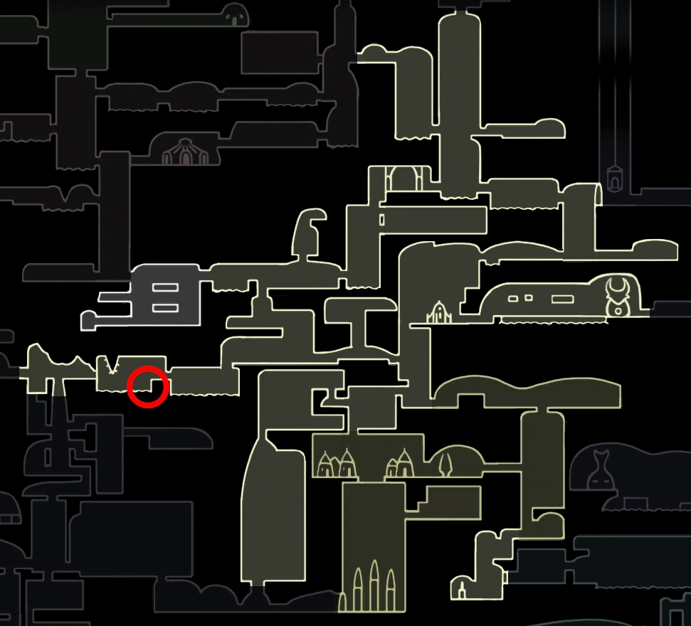

Composto por fungos vivos. Dispersa esporos em contato com a ALMA. Ao focar a ALMA, emite uma nuvem de esporos que danifica lentamente os inimigos.

Cogumelo Com Esporos
Este Amuleto está localizado nos Ermos Fúngicos perto de uma poça de
ácido, perto das entradas dos Jardins da Rainha e Ninho Profundo.
